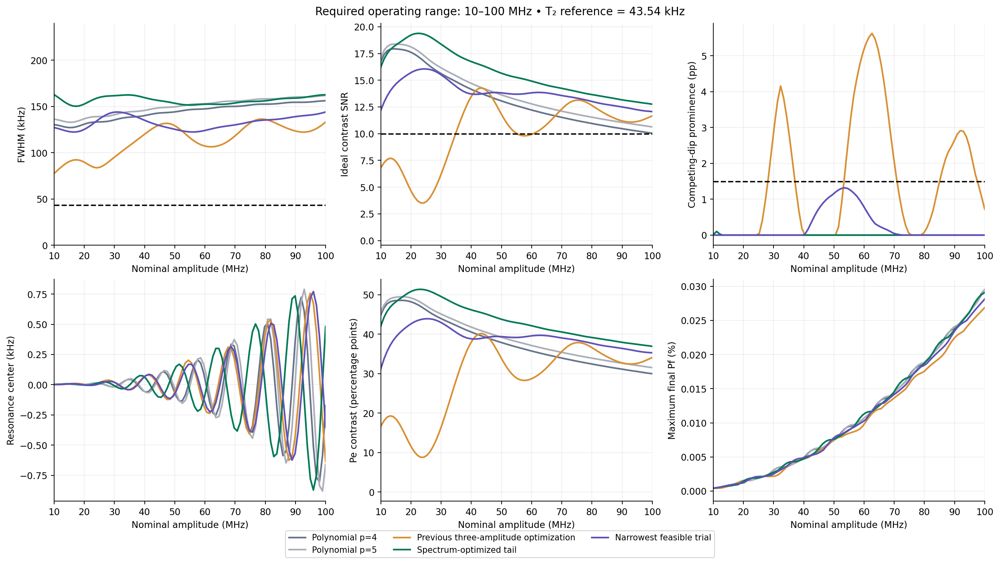
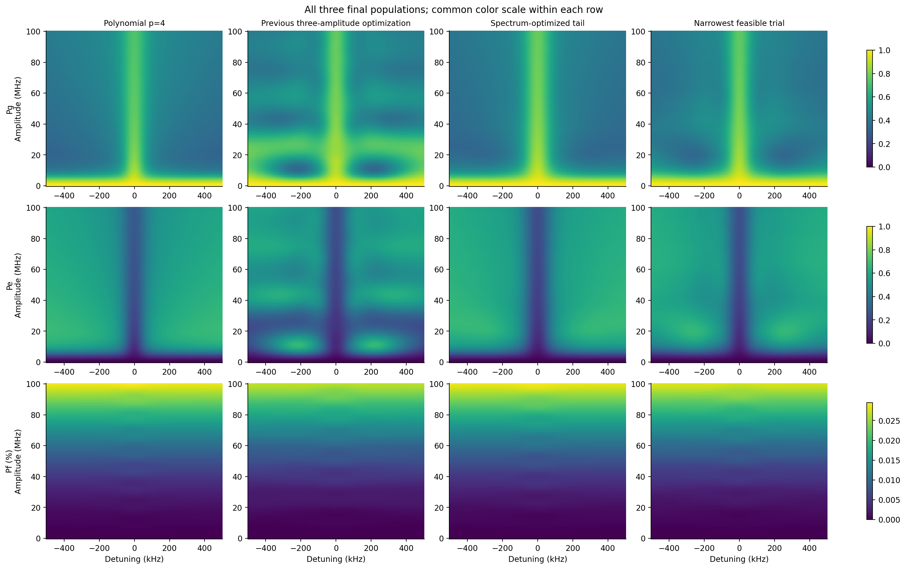
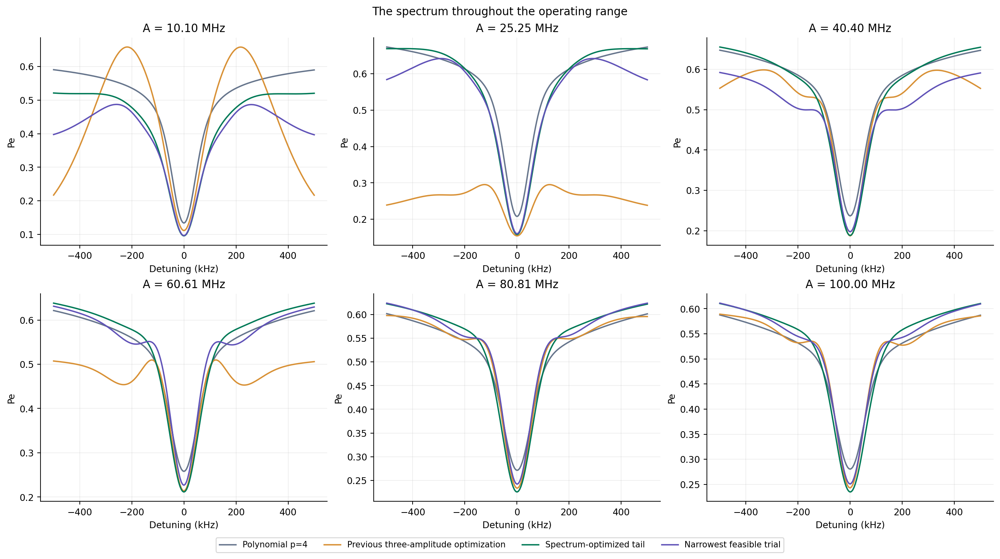
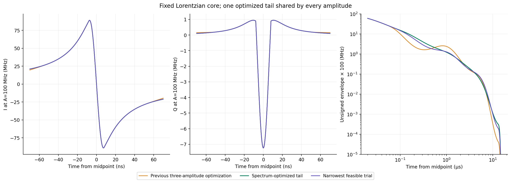
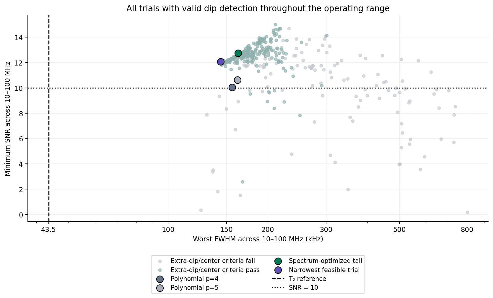
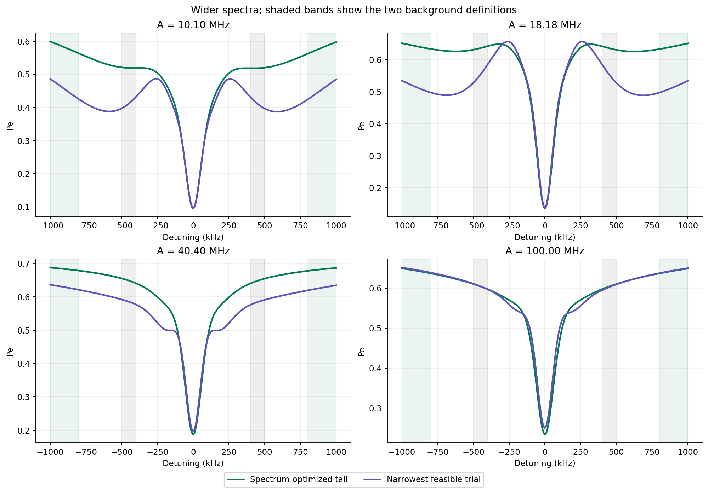
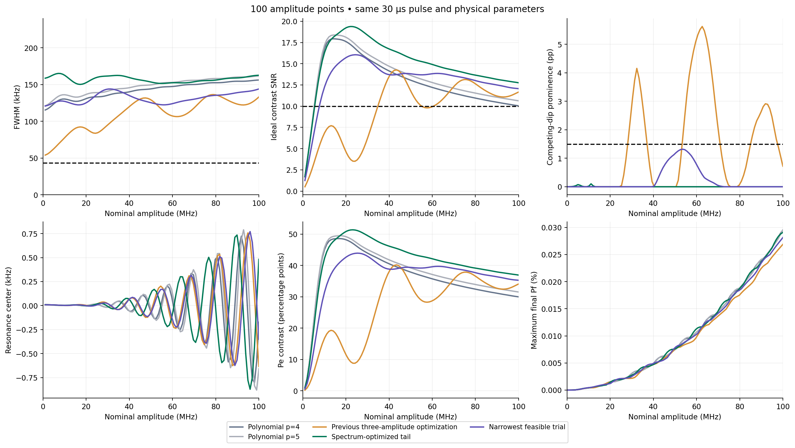

The narrowest candidate satisfying the original frequency-window constraints gives worst FWHM 144.02 kHz, minimum ideal SNR 12.065, and maximum competing-dip prominence 1.319 percentage points across 10.101–100 MHz. Its worst width is 3.31× the 43.54 kHz T₂ reference. The joint near-T₂ target was not achieved.
The more conservative whole-spectrum objective, including a penalty on broad shoulder curvature, gives 162.71 kHz and SNR 12.757. Both fixed shapes are shown. These are finite numerical searches within one six-parameter family, not evidence of a fundamental physical lower bound.
Frequency-window limitation: optimization and primary constraints use the complete original ±500 kHz spectrum. The independent ±1 MHz scan finds larger extra-dip prominences: Spectrum-optimized tail: 2.29 pp; Narrowest feasible trial: 9.86 pp. Suppression within the optimization window does not establish suppression at arbitrary detuning. In particular, the narrower shape does not meet the 1.5-point selectivity cap over ±1 MHz; its smaller central linewidth should not be interpreted as a clean isolated resonance over that window.
Every simulated candidate uses all 100 amplitudes from 0 to 100 MHz. The requested visibility/selectivity requirement is enforced at the 90 grid points from 10.101 to 100 MHz. All 100 spectra contribute to the line-shape objective; SNR and linewidth are undefined at zero drive. The unchanged parameters are 30 µs duration, cutoff 0.001, σ = 15.0000075 ns, 16 ns sine echo inversion, DRAG β = −0.5, α = −216 MHz, T₁ = 51.24 µs, T₂ = 7.31 µs, Tφ = 7.871480508563624 µs. Three-level RWA Lindblad dynamics, the same relaxation and dephasing operators, no extra Stark term, and no per-amplitude waveform rescaling.
Extrema can occur at different amplitudes. FWHM retains the previous central-dip, nearest-half-depth-crossing definition using the linear background at |detuning| = 0.4–0.5 MHz. These values are not Lorentzian-fit widths.
| Pulse | Worst FWHM (kHz) | Minimum SNR | Largest extra dip (pp) | Max |center| (kHz) |
|---|---|---|---|---|
| Polynomial p=4 | 156.22 | 10.045 | 0.000 | 0.802 |
| Polynomial p=5 | 161.85 | 10.636 | 0.000 | 0.880 |
| Previous three-amplitude optimization | 136.42 | 3.513 | 5.626 | 0.758 |
| Spectrum-optimized tail | 162.71 | 12.757 | 0.102 | 0.872 |
| Narrowest feasible trial | 144.02 | 12.065 | 1.319 | 0.772 |



The same six-parameter tail family is retained: g(t) = f(t) exp[h(ln|t|)] w(t), where f is the original root-Lorentzian, h = 0 for |t| ≤ 50 ns, and h is a quintic spline through |t| = 0.05, 0.15, 0.5, 1.5, 4, 9, 15 µs. Its first two derivatives vanish at both spline endpoints. A fixed quintic window w closes the last 2 µs of each edge. The pulse and its first two derivatives vanish at ±15 µs. DRAG uses the complete analytic derivative of the signed envelope, Q = −β I′/(2π|α|), and the complex drive is I − iQ.
| |t| (µs) | h: spectrum objective | h: narrower candidate |
|---|---|---|
| 0.05 | 0 | 0 |
| 0.15 | 0.02608929528 | -0.1170264928 |
| 0.5 | -0.2521181751 | -0.5169524935 |
| 1.5 | -0.3268981515 | -0.304016284 |
| 4 | -1.150590886 | -1.11073116 |
| 9 | -4.257741849 | -4.202516461 |
| 15 | -5.972557015 | -6.458649439 |

The objective combines worst FWHM; mean and worst residuals relative to a 43.54 kHz Lorentzian template, fitting only its depth; an SNR penalty below 10.15; extra-dip prominence above 1 percentage point; outward spectral reversals above 2.5 percentage points total; and center displacement above 2 kHz. The template residual uses every frequency sample and all 100 amplitudes. Additional minima are identified after excluding the central basin within ±20 kHz, including dips closer than the previous 50 kHz exclusion. Feasible candidates require minimum SNR ≥ 10, extra-dip prominence ≤ 1.5 percentage points, and |center| ≤ 2 kHz.
Initial search: 378 distinct trials, 24 initial shapes, 12 differential-evolution generations, followed by six parallel coordinate sweeps, seed 20261013. Each trial used 100 × 101 frequency/amplitude points and a 1 ns RK4 step. Four distinct finalists spanning lowest objective and narrowest feasible width were evaluated at 100 × 201 points and 0.5 ns. Primary selection uses the lowest whole-spectrum objective among feasible finalists; the second uses lowest worst FWHM. The same 100 amplitudes were used for optimization and final resolution checks, so the latter are numerical validation, not unseen-amplitude validation.
A final width-oriented branch added 81 trials, still using all 100 amplitudes and the complete frequency spectrum. It retained the template, SNR, extra-dip and center penalties while removing only the separate penalty on broad outward spectral curvature. Eight coordinate sweeps tested steps of 0.15, 0.075, 0.035 and 0.015 in the six spline ordinates. The new narrow candidate was accepted only after satisfying the original SNR/selectivity constraints at 0.5 ns / 5 kHz resolution. Total distinct trials: 459.
The narrowest screening result slightly exceeded the 1.5-point extra-dip cap when recomputed on the finer grid. It was rejected, and the next narrow candidate was checked before selection. This boundary check is retained in the finalist records.
459 trials passed the waveform peak check and were propagated at all 100 amplitudes; the remaining trials were rejected before propagation because the unsigned envelope exceeded the original normalized peak of one.

Both selected waveforms were rerun at all 100 amplitudes using 401 detunings and a 0.25 ns step. Maximum probability change is 1.81e-05; maximum linewidth change is 73.33 Hz; maximum SNR change is 0.0049.
Independent checks used 99 amplitudes halfway between every pair of search amplitudes, with 201 detunings and a 0.5 ns step. Statistics below use midpoint amplitudes ≥ 10 MHz; no optimization was performed on them. The exact 10 MHz endpoint was checked separately with 401 detunings and a 0.25 ns step.
| Pulse | Worst FWHM (kHz) | Minimum SNR | Largest extra dip (pp) |
|---|---|---|---|
| Spectrum-optimized tail | 162.63 | 12.779 | 0.065 |
| Narrowest feasible trial | 144.04 | 12.078 | 1.315 |
Both pulses were also simulated at all 100 amplitudes over ±1 MHz. The following widths use a different background band, 0.8–1 MHz, and should not be mixed with the primary definition. Extra-dip prominence is checked across that wider spectrum.
| Pulse | Outer-background FWHM range (kHz) | Largest extra dip over ±1 MHz (pp) |
|---|---|---|
| Spectrum-optimized tail | 152.04–185.30 | 2.287 |
| Narrowest feasible trial | 114.29–158.73 | 9.858 |


SNR assumes 500 ideal Bernoulli shots at the center and 250 at each ±0.45 MHz shoulder. It excludes readout error, drift and center-search cost. It is not percentage contrast. Final Pf does not bound transient leakage. The 1/(πT₂) value is a weak-drive Lorentzian reference, not a universal bound on finite-pulse interference features. No hardware measurements were performed.
48 focused objective/model/metric tests passed. The full suite cannot collect because Torch is missing; repository-wide Ruff has 692 pre-existing findings. The new scripts and focused test pass scoped Ruff. All maps are normalized and physical, and the reused controls were checked against their source hashes.
Selected shape · Narrowest feasible shape · Selected normalized I/Q · Narrow candidate normalized I/Q · All metrics · Metrics CSV · Resolution checks · Objective and grid provenance · Sources and reproduction · Comparison PDF · Populations PDF